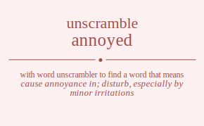

The word found after unscrambling annoyed means that cause annoyance in; disturb, especially by minor irritations, aroused to impatience or anger, troubled persistently especially with petty annoyances, .

The word found after unscrambling annoyed means that cause annoyance in; disturb, especially by minor irritations, aroused to impatience or anger, troubled persistently especially with petty annoyances, .
You can also find solutions for different combinations of letters in annoyed like annoyed annoyde annoeyd annoedy annodye annodey annyoed annyode annyeod annyedo annydoe annydeo anneoyd anneody anneyod anneydo annedoy annedyo anndoye anndoey anndyoe anndyeo anndeoy anndeyo anonyed anonyde anoneyd anonedy anondye anondey anoyned anoynde anoyend anoyedn anoydne anoyden anoenyd anoendy anoeynd anoeydn anoedny anoedyn anodnye anodney anodyne anodyen anodeny anodeyn anynoed anynode anyneod anynedo anyndoe anyndeo anyoned anyonde anyoend anyoedn anyodne anyoden anyenod anyendo anyeond anyeodn anyedno anyedon anydnoe anydneo anydone anydoen anydeno anydeon anenoyd anenody anenyod anenydo anendoy anendyo aneonyd aneondy aneoynd aneoydn aneodny aneodyn aneynod aneyndo aneyond aneyodn aneydno aneydon anednoy anednyo anedony anedoyn anedyno anedyon andnoye andnoey andnyoe andnyeo andneoy andneyo andonye andoney andoyne andoyen andoeny andoeyn andynoe andyneo andyone andyoen andyeno andyeon andenoy andenyo andeony andeoyn andeyno andeyon annoyed annoyde annoeyd annoedy annodye annodey annyoed annyode annyeod annyedo annydoe annydeo anneoyd anneody anneyod anneydo annedoy annedyo anndoye anndoey anndyoe anndyeo anndeoy anndeyo anonyed anonyde anoneyd anonedy anondye anondey anoyned anoynde anoyend anoyedn anoydne anoyden anoenyd anoendy anoeynd anoeydn anoedny anoedyn anodnye anodney anodyne anodyen anodeny anodeyn anynoed anynode anyneod anynedo anyndoe anyndeo anyoned anyonde anyoend anyoedn anyodne anyoden anyenod anyendo anyeond anyeodn anyedno anyedon anydnoe anydneo anydone anydoen anydeno anydeon anenoyd anenody anenyod anenydo anendoy anendyo aneonyd aneondy aneoynd aneoydn aneodny aneodyn aneynod aneyndo aneyond aneyodn aneydno aneydon anednoy anednyo anedony anedoyn anedyno anedyon andnoye andnoey andnyoe andnyeo andneoy andneyo andonye andoney andoyne andoyen andoeny andoeyn andynoe andyneo andyone andyoen andyeno andyeon andenoy andenyo andeony andeoyn andeyno andeyon aonnyed aonnyde aonneyd aonnedy aonndye aonndey aonyned aonynde aonyend aonyedn aonydne aonyden aonenyd aonendy aoneynd aoneydn aonedny aonedyn aondnye aondney aondyne aondyen aondeny aondeyn aonnyed aonnyde aonneyd aonnedy aonndye aonndey aonyned aonynde aonyend aonyedn aonydne aonyden aonenyd aonendy aoneynd aoneydn aonedny aonedyn aondnye aondney aondyne aondyen aondeny aondeyn aoynned aoynnde aoynend aoynedn aoyndne aoynden aoynned aoynnde aoynend aoynedn aoyndne aoynden aoyennd aoyendn aoyennd aoyendn aoyednn aoyednn aoydnne aoydnen aoydnne aoydnen aoydenn aoydenn aoennyd aoenndy aoenynd aoenydn aoendny aoendyn aoennyd aoenndy aoenynd aoenydn aoendny aoendyn aoeynnd aoeyndn aoeynnd aoeyndn aoeydnn aoeydnn aoednny aoednyn aoednny aoednyn aoedynn aoedynn aodnnye aodnney aodnyne aodnyen aodneny aodneyn aodnnye aodnney aodnyne aodnyen aodneny aodneyn aodynne aodynen aodynne aodynen aodyenn aodyenn aodenny aodenyn aodenny aodenyn aodeynn aodeynn aynnoed aynnode aynneod aynnedo aynndoe aynndeo aynoned aynonde aynoend aynoedn aynodne aynoden aynenod aynendo ayneond ayneodn aynedno aynedon ayndnoe ayndneo ayndone ayndoen ayndeno ayndeon aynnoed aynnode aynneod aynnedo aynndoe aynndeo aynoned aynonde aynoend aynoedn aynodne aynoden aynenod aynendo ayneond ayneodn aynedno aynedon ayndnoe ayndneo ayndone ayndoen ayndeno ayndeon ayonned ayonnde ayonend ayonedn ayondne ayonden ayonned ayonnde ayonend ayonedn ayondne ayonden ayoennd ayoendn ayoennd ayoendn ayoednn ayoednn ayodnne ayodnen ayodnne ayodnen ayodenn ayodenn ayennod ayenndo ayenond ayenodn ayendno ayendon ayennod ayenndo ayenond ayenodn ayendno ayendon ayeonnd ayeondn ayeonnd ayeondn ayeodnn ayeodnn ayednno ayednon ayednno ayednon ayedonn ayedonn aydnnoe aydnneo aydnone aydnoen aydneno aydneon aydnnoe aydnneo aydnone aydnoen aydneno aydneon aydonne aydonen aydonne aydonen aydoenn aydoenn aydenno aydenon aydenno aydenon aydeonn aydeonn aennoyd aennody aennyod aennydo aenndoy aenndyo aenonyd aenondy aenoynd aenoydn aenodny aenodyn aenynod aenyndo aenyond aenyodn aenydno aenydon aendnoy aendnyo aendony aendoyn aendyno aendyon aennoyd aennody aennyod aennydo aenndoy aenndyo aenonyd aenondy aenoynd aenoydn aenodny aenodyn aenynod aenyndo aenyond aenyodn aenydno aenydon aendnoy aendnyo aendony aendoyn aendyno aendyon aeonnyd aeonndy aeonynd aeonydn aeondny aeondyn aeonnyd aeonndy aeonynd aeonydn aeondny aeondyn aeoynnd aeoyndn aeoynnd aeoyndn aeoydnn aeoydnn aeodnny aeodnyn aeodnny aeodnyn aeodynn aeodynn aeynnod aeynndo aeynond aeynodn aeyndno aeyndon aeynnod aeynndo aeynond aeynodn aeyndno aeyndon aeyonnd aeyondn aeyonnd aeyondn aeyodnn aeyodnn aeydnno aeydnon aeydnno aeydnon aeydonn aeydonn aednnoy aednnyo aednony aednoyn aednyno aednyon aednnoy aednnyo aednony aednoyn aednyno aednyon aedonny aedonyn aedonny aedonyn aedoynn aedoynn aedynno aedynon aedynno aedynon aedyonn aedyonn adnnoye adnnoey adnnyoe adnnyeo adnneoy adnneyo adnonye adnoney adnoyne adnoyen adnoeny adnoeyn adnynoe adnyneo adnyone adnyoen adnyeno adnyeon adnenoy adnenyo adneony adneoyn adneyno adneyon adnnoye adnnoey adnnyoe adnnyeo adnneoy adnneyo adnonye adnoney adnoyne adnoyen adnoeny adnoeyn adnynoe adnyneo adnyone adnyoen adnyeno adnyeon adnenoy adnenyo adneony adneoyn adneyno adneyon adonnye adonney adonyne adonyen adoneny adoneyn adonnye adonney adonyne adonyen adoneny adoneyn adoynne adoynen adoynne adoynen adoyenn adoyenn adoenny adoenyn adoenny adoenyn adoeynn adoeynn adynnoe adynneo adynone adynoen adyneno adyneon adynnoe adynneo adynone adynoen adyneno adyneon adyonne adyonen adyonne adyonen adyoenn adyoenn adyenno adyenon adyenno adyenon adyeonn adyeonn adennoy adennyo adenony adenoyn adenyno adenyon adennoy adennyo adenony adenoyn adenyno adenyon adeonny adeonyn adeonny adeonyn adeoynn adeoynn adeynno adeynon adeynno adeynon adeyonn adeyonn nanoyed nanoyde nanoeyd nanoedy nanodye nanodey nanyoed nanyode nanyeod nanyedo nanydoe nanydeo naneoyd naneody naneyod naneydo nanedoy nanedyo nandoye nandoey nandyoe nandyeo nandeoy nandeyo naonyed naonyde naoneyd naonedy naondye naondey naoyned naoynde naoyend naoyedn naoydne naoyden naoenyd naoendy naoeynd naoeydn naoedny naoedyn naodnye naodney naodyne naodyen naodeny naodeyn naynoed naynode nayneod naynedo nayndoe nayndeo nayoned nayonde nayoend nayoedn nayodne nayoden nayenod nayendo nayeond nayeodn nayedno nayedon naydnoe naydneo naydone naydoen naydeno naydeon naenoyd naenody naenyod naenydo naendoy naendyo naeonyd naeondy naeoynd naeoydn naeodny naeodyn naeynod naeyndo naeyond naeyodn naeydno naeydon naednoy naednyo naedony naedoyn naedyno naedyon nadnoye nadnoey nadnyoe nadnyeo nadneoy nadneyo nadonye nadoney nadoyne nadoyen nadoeny nadoeyn nadynoe nadyneo nadyone nadyoen nadyeno nadyeon nadenoy nadenyo nadeony nadeoyn nadeyno nadeyon nnaoyed nnaoyde nnaoeyd nnaoedy nnaodye nnaodey nnayoed nnayode nnayeod nnayedo nnaydoe nnaydeo nnaeoyd nnaeody nnaeyod nnaeydo nnaedoy nnaedyo nnadoye nnadoey nnadyoe nnadyeo nnadeoy nnadeyo nnoayed nnoayde nnoaeyd nnoaedy nnoadye nnoadey nnoyaed nnoyade nnoyead nnoyeda nnoydae nnoydea nnoeayd nnoeady nnoeyad nnoeyda nnoeday nnoedya nnodaye nnodaey nnodyae nnodyea nnodeay nnodeya nnyaoed nnyaode nnyaeod nnyaedo nnyadoe nnyadeo nnyoaed nnyoade nnyoead nnyoeda nnyodae nnyodea nnyeaod nnyeado nnyeoad nnyeoda nnyedao nnyedoa nnydaoe nnydaeo nnydoae nnydoea nnydeao nnydeoa nneaoyd nneaody nneayod nneaydo nneadoy nneadyo nneoayd nneoady nneoyad nneoyda nneoday nneodya nneyaod nneyado nneyoad nneyoda nneydao nneydoa nnedaoy nnedayo nnedoay nnedoya nnedyao nnedyoa nndaoye nndaoey nndayoe nndayeo nndaeoy nndaeyo nndoaye nndoaey nndoyae nndoyea nndoeay nndoeya nndyaoe nndyaeo nndyoae nndyoea nndyeao nndyeoa nndeaoy nndeayo nndeoay nndeoya nndeyao nndeyoa noanyed noanyde noaneyd noanedy noandye noandey noayned noaynde noayend noayedn noaydne noayden noaenyd noaendy noaeynd noaeydn noaedny noaedyn noadnye noadney noadyne noadyen noadeny noadeyn nonayed nonayde nonaeyd nonaedy nonadye nonadey nonyaed nonyade nonyead nonyeda nonydae nonydea noneayd noneady noneyad noneyda noneday nonedya nondaye nondaey nondyae nondyea nondeay nondeya noyaned noyande noyaend noyaedn noyadne noyaden noynaed noynade noynead noyneda noyndae noyndea noyeand noyeadn noyenad noyenda noyedan noyedna noydane noydaen noydnae noydnea noydean noydena noeanyd noeandy noeaynd noeaydn noeadny noeadyn noenayd noenady noenyad noenyda noenday noendya noeyand noeyadn noeynad noeynda noeydan noeydna noedany noedayn noednay noednya noedyan noedyna nodanye nodaney nodayne nodayen nodaeny nodaeyn nodnaye nodnaey nodnyae nodnyea nodneay nodneya nodyane nodyaen nodynae nodynea nodyean nodyena nodeany nodeayn nodenay nodenya nodeyan nodeyna nyanoed nyanode nyaneod nyanedo nyandoe nyandeo nyaoned nyaonde nyaoend nyaoedn nyaodne nyaoden nyaenod nyaendo nyaeond nyaeodn nyaedno nyaedon nyadnoe nyadneo nyadone nyadoen nyadeno nyadeon nynaoed nynaode nynaeod nynaedo nynadoe nynadeo nynoaed nynoade nynoead nynoeda nynodae nynodea nyneaod nyneado nyneoad nyneoda nynedao nynedoa nyndaoe nyndaeo nyndoae nyndoea nyndeao nyndeoa nyoaned nyoande nyoaend nyoaedn nyoadne nyoaden nyonaed nyonade nyonead nyoneda nyondae nyondea nyoeand nyoeadn nyoenad nyoenda nyoedan nyoedna nyodane nyodaen nyodnae nyodnea nyodean nyodena nyeanod nyeando nyeaond nyeaodn nyeadno nyeadon nyenaod nyenado nyenoad nyenoda nyendao nyendoa nyeoand nyeoadn nyeonad nyeonda nyeodan nyeodna nyedano nyedaon nyednao nyednoa nyedoan nyedona nydanoe nydaneo nydaone nydaoen nydaeno nydaeon nydnaoe nydnaeo nydnoae nydnoea nydneao nydneoa nydoane nydoaen nydonae nydonea nydoean nydoena nydeano nydeaon nydenao nydenoa nydeoan nydeona neanoyd neanody neanyod neanydo neandoy neandyo neaonyd neaondy neaoynd neaoydn neaodny neaodyn neaynod neayndo neayond neayodn neaydno neaydon neadnoy neadnyo neadony neadoyn neadyno neadyon nenaoyd nenaody nenayod nenaydo nenadoy nenadyo nenoayd nenoady nenoyad nenoyda nenoday nenodya nenyaod nenyado nenyoad nenyoda nenydao nenydoa nendaoy nendayo nendoay nendoya nendyao nendyoa neoanyd neoandy neoaynd neoaydn neoadny neoadyn neonayd neonady neonyad neonyda neonday neondya neoyand neoyadn neoynad neoynda neoydan neoydna neodany neodayn neodnay neodnya neodyan neodyna neyanod neyando neyaond neyaodn neyadno neyadon neynaod neynado neynoad neynoda neyndao neyndoa neyoand neyoadn neyonad neyonda neyodan neyodna neydano neydaon neydnao neydnoa neydoan neydona nedanoy nedanyo nedaony nedaoyn nedayno nedayon nednaoy nednayo nednoay nednoya nednyao nednyoa nedoany nedoayn nedonay nedonya nedoyan nedoyna nedyano nedyaon nedynao nedynoa nedyoan nedyona ndanoye ndanoey ndanyoe ndanyeo ndaneoy ndaneyo ndaonye ndaoney ndaoyne ndaoyen ndaoeny ndaoeyn ndaynoe ndayneo ndayone ndayoen ndayeno ndayeon ndaenoy ndaenyo ndaeony ndaeoyn ndaeyno ndaeyon ndnaoye ndnaoey ndnayoe ndnayeo ndnaeoy ndnaeyo ndnoaye ndnoaey ndnoyae ndnoyea ndnoeay ndnoeya ndnyaoe ndnyaeo ndnyoae ndnyoea ndnyeao ndnyeoa ndneaoy ndneayo ndneoay ndneoya ndneyao ndneyoa ndoanye ndoaney ndoayne ndoayen ndoaeny ndoaeyn ndonaye ndonaey ndonyae ndonyea ndoneay ndoneya ndoyane ndoyaen ndoynae ndoynea ndoyean ndoyena ndoeany ndoeayn ndoenay ndoenya ndoeyan ndoeyna ndyanoe ndyaneo ndyaone ndyaoen ndyaeno ndyaeon ndynaoe ndynaeo ndynoae ndynoea ndyneao ndyneoa ndyoane ndyoaen ndyonae ndyonea ndyoean ndyoena ndyeano ndyeaon ndyenao ndyenoa ndyeoan ndyeona ndeanoy ndeanyo ndeaony ndeaoyn ndeayno ndeayon ndenaoy ndenayo ndenoay ndenoya ndenyao ndenyoa ndeoany ndeoayn ndeonay ndeonya ndeoyan ndeoyna ndeyano ndeyaon ndeynao ndeynoa ndeyoan ndeyona nanoyed nanoyde nanoeyd nanoedy nanodye nanodey nanyoed nanyode nanyeod nanyedo nanydoe nanydeo naneoyd naneody naneyod naneydo nanedoy nanedyo nandoye nandoey nandyoe nandyeo nandeoy nandeyo naonyed naonyde naoneyd naonedy naondye naondey naoyned naoynde naoyend naoyedn naoydne naoyden naoenyd naoendy naoeynd naoeydn naoedny naoedyn naodnye naodney naodyne naodyen naodeny naodeyn naynoed naynode nayneod naynedo nayndoe nayndeo nayoned nayonde nayoend nayoedn nayodne nayoden nayenod nayendo nayeond nayeodn nayedno nayedon naydnoe naydneo naydone naydoen naydeno naydeon naenoyd naenody naenyod naenydo naendoy naendyo naeonyd naeondy naeoynd naeoydn naeodny naeodyn naeynod naeyndo naeyond naeyodn naeydno naeydon naednoy naednyo naedony naedoyn naedyno naedyon nadnoye nadnoey nadnyoe nadnyeo nadneoy nadneyo nadonye nadoney nadoyne nadoyen nadoeny nadoeyn nadynoe nadyneo nadyone nadyoen nadyeno nadyeon nadenoy nadenyo nadeony nadeoyn nadeyno nadeyon nnaoyed nnaoyde nnaoeyd nnaoedy nnaodye nnaodey nnayoed nnayode nnayeod nnayedo nnaydoe nnaydeo nnaeoyd nnaeody nnaeyod nnaeydo nnaedoy nnaedyo nnadoye nnadoey nnadyoe nnadyeo nnadeoy nnadeyo nnoayed nnoayde nnoaeyd nnoaedy nnoadye nnoadey nnoyaed nnoyade nnoyead nnoyeda nnoydae nnoydea nnoeayd nnoeady nnoeyad nnoeyda nnoeday nnoedya nnodaye nnodaey nnodyae nnodyea nnodeay nnodeya nnyaoed nnyaode nnyaeod nnyaedo nnyadoe nnyadeo nnyoaed nnyoade nnyoead nnyoeda nnyodae nnyodea nnyeaod nnyeado nnyeoad nnyeoda nnyedao nnyedoa nnydaoe nnydaeo nnydoae nnydoea nnydeao nnydeoa nneaoyd nneaody nneayod nneaydo nneadoy nneadyo nneoayd nneoady nneoyad nneoyda nneoday nneodya nneyaod nneyado nneyoad nneyoda nneydao nneydoa nnedaoy nnedayo nnedoay nnedoya nnedyao nnedyoa nndaoye nndaoey nndayoe nndayeo nndaeoy nndaeyo nndoaye nndoaey nndoyae nndoyea nndoeay nndoeya nndyaoe nndyaeo nndyoae nndyoea nndyeao nndyeoa nndeaoy nndeayo nndeoay nndeoya nndeyao nndeyoa noanyed noanyde noaneyd noanedy noandye noandey noayned noaynde noayend noayedn noaydne noayden noaenyd noaendy noaeynd noaeydn noaedny noaedyn noadnye noadney noadyne noadyen noadeny noadeyn nonayed nonayde nonaeyd nonaedy nonadye nonadey nonyaed nonyade nonyead nonyeda nonydae nonydea noneayd noneady noneyad noneyda noneday nonedya nondaye nondaey nondyae nondyea nondeay nondeya noyaned noyande noyaend noyaedn noyadne noyaden noynaed noynade noynead noyneda noyndae noyndea noyeand noyeadn noyenad noyenda noyedan noyedna noydane noydaen noydnae noydnea noydean noydena noeanyd noeandy noeaynd noeaydn noeadny noeadyn noenayd noenady noenyad noenyda noenday noendya noeyand noeyadn noeynad noeynda noeydan noeydna noedany noedayn noednay noednya noedyan noedyna nodanye nodaney nodayne nodayen nodaeny nodaeyn nodnaye nodnaey nodnyae nodnyea nodneay nodneya nodyane nodyaen nodynae nodynea nodyean nodyena nodeany nodeayn nodenay nodenya nodeyan nodeyna nyanoed nyanode nyaneod nyanedo nyandoe nyandeo nyaoned nyaonde nyaoend nyaoedn nyaodne nyaoden nyaenod nyaendo nyaeond nyaeodn nyaedno nyaedon nyadnoe nyadneo nyadone nyadoen nyadeno nyadeon nynaoed nynaode nynaeod nynaedo nynadoe nynadeo nynoaed nynoade nynoead nynoeda nynodae nynodea nyneaod nyneado nyneoad nyneoda nynedao nynedoa nyndaoe nyndaeo nyndoae nyndoea nyndeao nyndeoa nyoaned nyoande nyoaend nyoaedn nyoadne nyoaden nyonaed nyonade nyonead nyoneda nyondae nyondea nyoeand nyoeadn nyoenad nyoenda nyoedan nyoedna nyodane nyodaen nyodnae nyodnea nyodean nyodena nyeanod nyeando nyeaond nyeaodn nyeadno nyeadon nyenaod nyenado nyenoad nyenoda nyendao nyendoa nyeoand nyeoadn nyeonad nyeonda nyeodan nyeodna nyedano nyedaon nyednao nyednoa nyedoan nyedona nydanoe nydaneo nydaone nydaoen nydaeno nydaeon nydnaoe nydnaeo nydnoae nydnoea nydneao nydneoa nydoane nydoaen nydonae nydonea nydoean nydoena nydeano nydeaon nydenao nydenoa nydeoan nydeona neanoyd neanody neanyod neanydo neandoy neandyo neaonyd neaondy neaoynd neaoydn neaodny neaodyn neaynod neayndo neayond neayodn neaydno neaydon neadnoy neadnyo neadony neadoyn neadyno neadyon nenaoyd nenaody nenayod nenaydo nenadoy nenadyo nenoayd nenoady nenoyad nenoyda nenoday nenodya nenyaod nenyado nenyoad nenyoda nenydao nenydoa nendaoy nendayo nendoay nendoya nendyao nendyoa neoanyd neoandy neoaynd neoaydn neoadny neoadyn neonayd neonady neonyad neonyda neonday neondya neoyand neoyadn neoynad neoynda neoydan neoydna neodany neodayn neodnay neodnya neodyan neodyna neyanod neyando neyaond neyaodn neyadno neyadon neynaod neynado neynoad neynoda neyndao neyndoa neyoand neyoadn neyonad neyonda neyodan neyodna neydano neydaon neydnao neydnoa neydoan neydona nedanoy nedanyo nedaony nedaoyn nedayno nedayon nednaoy nednayo nednoay nednoya nednyao nednyoa nedoany nedoayn nedonay nedonya nedoyan nedoyna nedyano nedyaon nedynao nedynoa nedyoan nedyona ndanoye ndanoey ndanyoe ndanyeo ndaneoy ndaneyo ndaonye ndaoney ndaoyne ndaoyen ndaoeny ndaoeyn ndaynoe ndayneo ndayone ndayoen ndayeno ndayeon ndaenoy ndaenyo ndaeony ndaeoyn ndaeyno ndaeyon ndnaoye ndnaoey ndnayoe ndnayeo ndnaeoy ndnaeyo ndnoaye ndnoaey ndnoyae ndnoyea ndnoeay ndnoeya ndnyaoe ndnyaeo ndnyoae ndnyoea ndnyeao ndnyeoa ndneaoy ndneayo ndneoay ndneoya ndneyao ndneyoa ndoanye ndoaney ndoayne ndoayen ndoaeny ndoaeyn ndonaye ndonaey ndonyae ndonyea ndoneay ndoneya ndoyane ndoyaen ndoynae ndoynea ndoyean ndoyena ndoeany ndoeayn ndoenay ndoenya ndoeyan ndoeyna ndyanoe ndyaneo ndyaone ndyaoen ndyaeno ndyaeon ndynaoe ndynaeo ndynoae ndynoea ndyneao ndyneoa ndyoane ndyoaen ndyonae ndyonea ndyoean ndyoena ndyeano ndyeaon ndyenao ndyenoa ndyeoan ndyeona ndeanoy ndeanyo ndeaony ndeaoyn ndeayno ndeayon ndenaoy ndenayo ndenoay ndenoya ndenyao ndenyoa ndeoany ndeoayn ndeonay ndeonya ndeoyan ndeoyna ndeyano ndeyaon ndeynao ndeynoa ndeyoan ndeyona oannyed oannyde oanneyd oannedy oanndye oanndey oanyned oanynde oanyend oanyedn oanydne oanyden oanenyd oanendy oaneynd oaneydn oanedny oanedyn oandnye oandney oandyne oandyen oandeny oandeyn oannyed oannyde oanneyd oannedy oanndye oanndey oanyned oanynde oanyend oanyedn oanydne oanyden oanenyd oanendy oaneynd oaneydn oanedny oanedyn oandnye oandney oandyne oandyen oandeny oandeyn oaynned oaynnde oaynend oaynedn oayndne oaynden oaynned oaynnde oaynend oaynedn oayndne oaynden oayennd oayendn oayennd oayendn oayednn oayednn oaydnne oaydnen oaydnne oaydnen oaydenn oaydenn oaennyd oaenndy oaenynd oaenydn oaendny oaendyn oaennyd oaenndy oaenynd oaenydn oaendny oaendyn oaeynnd oaeyndn oaeynnd oaeyndn oaeydnn oaeydnn oaednny oaednyn oaednny oaednyn oaedynn oaedynn oadnnye oadnney oadnyne oadnyen oadneny oadneyn oadnnye oadnney oadnyne oadnyen oadneny oadneyn oadynne oadynen oadynne oadynen oadyenn oadyenn oadenny oadenyn oadenny oadenyn oadeynn oadeynn onanyed onanyde onaneyd onanedy onandye onandey onayned onaynde onayend onayedn onaydne onayden onaenyd onaendy onaeynd onaeydn onaedny onaedyn onadnye onadney onadyne onadyen onadeny onadeyn onnayed onnayde onnaeyd onnaedy onnadye onnadey onnyaed onnyade onnyead onnyeda onnydae onnydea onneayd onneady onneyad onneyda onneday onnedya onndaye onndaey onndyae onndyea onndeay onndeya onyaned onyande onyaend onyaedn onyadne onyaden onynaed onynade onynead onyneda onyndae onyndea onyeand onyeadn onyenad onyenda onyedan onyedna onydane onydaen onydnae onydnea onydean onydena oneanyd oneandy oneaynd oneaydn oneadny oneadyn onenayd onenady onenyad onenyda onenday onendya oneyand oneyadn oneynad oneynda oneydan oneydna onedany onedayn onednay onednya onedyan onedyna ondanye ondaney ondayne ondayen ondaeny ondaeyn ondnaye ondnaey ondnyae ondnyea ondneay ondneya ondyane ondyaen ondynae ondynea ondyean ondyena ondeany ondeayn ondenay ondenya ondeyan ondeyna onanyed onanyde onaneyd onanedy onandye onandey onayned onaynde onayend onayedn onaydne onayden onaenyd onaendy onaeynd onaeydn onaedny onaedyn onadnye onadney onadyne onadyen onadeny onadeyn onnayed onnayde onnaeyd onnaedy onnadye onnadey onnyaed onnyade onnyead onnyeda onnydae onnydea onneayd onneady onneyad onneyda onneday onnedya onndaye onndaey onndyae onndyea onndeay onndeya onyaned onyande onyaend onyaedn onyadne onyaden onynaed onynade onynead onyneda onyndae onyndea onyeand onyeadn onyenad onyenda onyedan onyedna onydane onydaen onydnae onydnea onydean onydena oneanyd oneandy oneaynd oneaydn oneadny oneadyn onenayd onenady onenyad onenyda onenday onendya oneyand oneyadn oneynad oneynda oneydan oneydna onedany onedayn onednay onednya onedyan onedyna ondanye ondaney ondayne ondayen ondaeny ondaeyn ondnaye ondnaey ondnyae ondnyea ondneay ondneya ondyane ondyaen ondynae ondynea ondyean ondyena ondeany ondeayn ondenay ondenya ondeyan ondeyna oyanned oyannde oyanend oyanedn oyandne oyanden oyanned oyannde oyanend oyanedn oyandne oyanden oyaennd oyaendn oyaennd oyaendn oyaednn oyaednn oyadnne oyadnen oyadnne oyadnen oyadenn oyadenn oynaned oynande oynaend oynaedn oynadne oynaden oynnaed oynnade oynnead oynneda oynndae oynndea oyneand oyneadn oynenad oynenda oynedan oynedna oyndane oyndaen oyndnae oyndnea oyndean oyndena oynaned oynande oynaend oynaedn oynadne oynaden oynnaed oynnade oynnead oynneda oynndae oynndea oyneand oyneadn oynenad oynenda oynedan oynedna oyndane oyndaen oyndnae oyndnea oyndean oyndena oyeannd oyeandn oyeannd oyeandn oyeadnn oyeadnn oyenand oyenadn oyennad oyennda oyendan oyendna oyenand oyenadn oyennad oyennda oyendan oyendna oyedann oyedann oyednan oyednna oyednan oyednna oydanne oydanen oydanne oydanen oydaenn oydaenn oydnane oydnaen oydnnae oydnnea oydnean oydnena oydnane oydnaen oydnnae oydnnea oydnean oydnena oydeann oydeann oydenan oydenna oydenan oydenna oeannyd oeanndy oeanynd oeanydn oeandny oeandyn oeannyd oeanndy oeanynd oeanydn oeandny oeandyn oeaynnd oeayndn oeaynnd oeayndn oeaydnn oeaydnn oeadnny oeadnyn oeadnny oeadnyn oeadynn oeadynn oenanyd oenandy oenaynd oenaydn oenadny oenadyn oennayd oennady oennyad oennyda oennday oenndya oenyand oenyadn oenynad oenynda oenydan oenydna oendany oendayn oendnay oendnya oendyan oendyna oenanyd oenandy oenaynd oenaydn oenadny oenadyn oennayd oennady oennyad oennyda oennday oenndya oenyand oenyadn oenynad oenynda oenydan oenydna oendany oendayn oendnay oendnya oendyan oendyna oeyannd oeyandn oeyannd oeyandn oeyadnn oeyadnn oeynand oeynadn oeynnad oeynnda oeyndan oeyndna oeynand oeynadn oeynnad oeynnda oeyndan oeyndna oeydann oeydann oeydnan oeydnna oeydnan oeydnna oedanny oedanyn oedanny oedanyn oedaynn oedaynn oednany oednayn oednnay oednnya oednyan oednyna oednany oednayn oednnay oednnya oednyan oednyna oedyann oedyann oedynan oedynna oedynan oedynna odannye odanney odanyne odanyen odaneny odaneyn odannye odanney odanyne odanyen odaneny odaneyn odaynne odaynen odaynne odaynen odayenn odayenn odaenny odaenyn odaenny odaenyn odaeynn odaeynn odnanye odnaney odnayne odnayen odnaeny odnaeyn odnnaye odnnaey odnnyae odnnyea odnneay odnneya odnyane odnyaen odnynae odnynea odnyean odnyena odneany odneayn odnenay odnenya odneyan odneyna odnanye odnaney odnayne odnayen odnaeny odnaeyn odnnaye odnnaey odnnyae odnnyea odnneay odnneya odnyane odnyaen odnynae odnynea odnyean odnyena odneany odneayn odnenay odnenya odneyan odneyna odyanne odyanen odyanne odyanen odyaenn odyaenn odynane odynaen odynnae odynnea odynean odynena odynane odynaen odynnae odynnea odynean odynena odyeann odyeann odyenan odyenna odyenan odyenna odeanny odeanyn odeanny odeanyn odeaynn odeaynn odenany odenayn odennay odennya odenyan odenyna odenany odenayn odennay odennya odenyan odenyna odeyann odeyann odeynan odeynna odeynan odeynna yannoed yannode yanneod yannedo yanndoe yanndeo yanoned yanonde yanoend yanoedn yanodne yanoden yanenod yanendo yaneond yaneodn yanedno yanedon yandnoe yandneo yandone yandoen yandeno yandeon yannoed yannode yanneod yannedo yanndoe yanndeo yanoned yanonde yanoend yanoedn yanodne yanoden yanenod yanendo yaneond yaneodn yanedno yanedon yandnoe yandneo yandone yandoen yandeno yandeon yaonned yaonnde yaonend yaonedn yaondne yaonden yaonned yaonnde yaonend yaonedn yaondne yaonden yaoennd yaoendn yaoennd yaoendn yaoednn yaoednn yaodnne yaodnen yaodnne yaodnen yaodenn yaodenn yaennod yaenndo yaenond yaenodn yaendno yaendon yaennod yaenndo yaenond yaenodn yaendno yaendon yaeonnd yaeondn yaeonnd yaeondn yaeodnn yaeodnn yaednno yaednon yaednno yaednon yaedonn yaedonn yadnnoe yadnneo yadnone yadnoen yadneno yadneon yadnnoe yadnneo yadnone yadnoen yadneno yadneon yadonne yadonen yadonne yadonen yadoenn yadoenn yadenno yadenon yadenno yadenon yadeonn yadeonn ynanoed ynanode ynaneod ynanedo ynandoe ynandeo ynaoned ynaonde ynaoend ynaoedn ynaodne ynaoden ynaenod ynaendo ynaeond ynaeodn ynaedno ynaedon ynadnoe ynadneo ynadone ynadoen ynadeno ynadeon ynnaoed ynnaode ynnaeod ynnaedo ynnadoe ynnadeo ynnoaed ynnoade ynnoead ynnoeda ynnodae ynnodea ynneaod ynneado ynneoad ynneoda ynnedao ynnedoa ynndaoe ynndaeo ynndoae ynndoea ynndeao ynndeoa ynoaned ynoande ynoaend ynoaedn ynoadne ynoaden ynonaed ynonade ynonead ynoneda ynondae ynondea ynoeand ynoeadn ynoenad ynoenda ynoedan ynoedna ynodane ynodaen ynodnae ynodnea ynodean ynodena yneanod yneando yneaond yneaodn yneadno yneadon ynenaod ynenado ynenoad ynenoda ynendao ynendoa yneoand yneoadn yneonad yneonda yneodan yneodna ynedano ynedaon ynednao ynednoa ynedoan ynedona yndanoe yndaneo yndaone yndaoen yndaeno yndaeon yndnaoe yndnaeo yndnoae yndnoea yndneao yndneoa yndoane yndoaen yndonae yndonea yndoean yndoena yndeano yndeaon yndenao yndenoa yndeoan yndeona ynanoed ynanode ynaneod ynanedo ynandoe ynandeo ynaoned ynaonde ynaoend ynaoedn ynaodne ynaoden ynaenod ynaendo ynaeond ynaeodn ynaedno ynaedon ynadnoe ynadneo ynadone ynadoen ynadeno ynadeon ynnaoed ynnaode ynnaeod ynnaedo ynnadoe ynnadeo ynnoaed ynnoade ynnoead ynnoeda ynnodae ynnodea ynneaod ynneado ynneoad ynneoda ynnedao ynnedoa ynndaoe ynndaeo ynndoae ynndoea ynndeao ynndeoa ynoaned ynoande ynoaend ynoaedn ynoadne ynoaden ynonaed ynonade ynonead ynoneda ynondae ynondea ynoeand ynoeadn ynoenad ynoenda ynoedan ynoedna ynodane ynodaen ynodnae ynodnea ynodean ynodena yneanod yneando yneaond yneaodn yneadno yneadon ynenaod ynenado ynenoad ynenoda ynendao ynendoa yneoand yneoadn yneonad yneonda yneodan yneodna ynedano ynedaon ynednao ynednoa ynedoan ynedona yndanoe yndaneo yndaone yndaoen yndaeno yndaeon yndnaoe yndnaeo yndnoae yndnoea yndneao yndneoa yndoane yndoaen yndonae yndonea yndoean yndoena yndeano yndeaon yndenao yndenoa yndeoan yndeona yoanned yoannde yoanend yoanedn yoandne yoanden yoanned yoannde yoanend yoanedn yoandne yoanden yoaennd yoaendn yoaennd yoaendn yoaednn yoaednn yoadnne yoadnen yoadnne yoadnen yoadenn yoadenn yonaned yonande yonaend yonaedn yonadne yonaden yonnaed yonnade yonnead yonneda yonndae yonndea yoneand yoneadn yonenad yonenda yonedan yonedna yondane yondaen yondnae yondnea yondean yondena yonaned yonande yonaend yonaedn yonadne yonaden yonnaed yonnade yonnead yonneda yonndae yonndea yoneand yoneadn yonenad yonenda yonedan yonedna yondane yondaen yondnae yondnea yondean yondena yoeannd yoeandn yoeannd yoeandn yoeadnn yoeadnn yoenand yoenadn yoennad yoennda yoendan yoendna yoenand yoenadn yoennad yoennda yoendan yoendna yoedann yoedann yoednan yoednna yoednan yoednna yodanne yodanen yodanne yodanen yodaenn yodaenn yodnane yodnaen yodnnae yodnnea yodnean yodnena yodnane yodnaen yodnnae yodnnea yodnean yodnena yodeann yodeann yodenan yodenna yodenan yodenna yeannod yeanndo yeanond yeanodn yeandno yeandon yeannod yeanndo yeanond yeanodn yeandno yeandon yeaonnd yeaondn yeaonnd yeaondn yeaodnn yeaodnn yeadnno yeadnon yeadnno yeadnon yeadonn yeadonn yenanod yenando yenaond yenaodn yenadno yenadon yennaod yennado yennoad yennoda yenndao yenndoa yenoand yenoadn yenonad yenonda yenodan yenodna yendano yendaon yendnao yendnoa yendoan yendona yenanod yenando yenaond yenaodn yenadno yenadon yennaod yennado yennoad yennoda yenndao yenndoa yenoand yenoadn yenonad yenonda yenodan yenodna yendano yendaon yendnao yendnoa yendoan yendona yeoannd yeoandn yeoannd yeoandn yeoadnn yeoadnn yeonand yeonadn yeonnad yeonnda yeondan yeondna yeonand yeonadn yeonnad yeonnda yeondan yeondna yeodann yeodann yeodnan yeodnna yeodnan yeodnna yedanno yedanon yedanno yedanon yedaonn yedaonn yednano yednaon yednnao yednnoa yednoan yednona yednano yednaon yednnao yednnoa yednoan yednona yedoann yedoann yedonan yedonna yedonan yedonna ydannoe ydanneo ydanone ydanoen ydaneno ydaneon ydannoe ydanneo ydanone ydanoen ydaneno ydaneon ydaonne ydaonen ydaonne ydaonen ydaoenn ydaoenn ydaenno ydaenon ydaenno ydaenon ydaeonn ydaeonn ydnanoe ydnaneo ydnaone ydnaoen ydnaeno ydnaeon ydnnaoe ydnnaeo ydnnoae ydnnoea ydnneao ydnneoa ydnoane ydnoaen ydnonae ydnonea ydnoean ydnoena ydneano ydneaon ydnenao ydnenoa ydneoan ydneona ydnanoe ydnaneo ydnaone ydnaoen ydnaeno ydnaeon ydnnaoe ydnnaeo ydnnoae ydnnoea ydnneao ydnneoa ydnoane ydnoaen ydnonae ydnonea ydnoean ydnoena ydneano ydneaon ydnenao ydnenoa ydneoan ydneona ydoanne ydoanen ydoanne ydoanen ydoaenn ydoaenn ydonane ydonaen ydonnae ydonnea ydonean ydonena ydonane ydonaen ydonnae ydonnea ydonean ydonena ydoeann ydoeann ydoenan ydoenna ydoenan ydoenna ydeanno ydeanon ydeanno ydeanon ydeaonn ydeaonn ydenano ydenaon ydennao ydennoa ydenoan ydenona ydenano ydenaon ydennao ydennoa ydenoan ydenona ydeoann ydeoann ydeonan ydeonna ydeonan ydeonna eannoyd eannody eannyod eannydo eanndoy eanndyo eanonyd eanondy eanoynd eanoydn eanodny eanodyn eanynod eanyndo eanyond eanyodn eanydno eanydon eandnoy eandnyo eandony eandoyn eandyno eandyon eannoyd eannody eannyod eannydo eanndoy eanndyo eanonyd eanondy eanoynd eanoydn eanodny eanodyn eanynod eanyndo eanyond eanyodn eanydno eanydon eandnoy eandnyo eandony eandoyn eandyno eandyon eaonnyd eaonndy eaonynd eaonydn eaondny eaondyn eaonnyd eaonndy eaonynd eaonydn eaondny eaondyn eaoynnd eaoyndn eaoynnd eaoyndn eaoydnn eaoydnn eaodnny eaodnyn eaodnny eaodnyn eaodynn eaodynn eaynnod eaynndo eaynond eaynodn eayndno eayndon eaynnod eaynndo eaynond eaynodn eayndno eayndon eayonnd eayondn eayonnd eayondn eayodnn eayodnn eaydnno eaydnon eaydnno eaydnon eaydonn eaydonn eadnnoy eadnnyo eadnony eadnoyn eadnyno eadnyon eadnnoy eadnnyo eadnony eadnoyn eadnyno eadnyon eadonny eadonyn eadonny eadonyn eadoynn eadoynn eadynno eadynon eadynno eadynon eadyonn eadyonn enanoyd enanody enanyod enanydo enandoy enandyo enaonyd enaondy enaoynd enaoydn enaodny enaodyn enaynod enayndo enayond enayodn enaydno enaydon enadnoy enadnyo enadony enadoyn enadyno enadyon ennaoyd ennaody ennayod ennaydo ennadoy ennadyo ennoayd ennoady ennoyad ennoyda ennoday ennodya ennyaod ennyado ennyoad ennyoda ennydao ennydoa enndaoy enndayo enndoay enndoya enndyao enndyoa enoanyd enoandy enoaynd enoaydn enoadny enoadyn enonayd enonady enonyad enonyda enonday enondya enoyand enoyadn enoynad enoynda enoydan enoydna enodany enodayn enodnay enodnya enodyan enodyna enyanod enyando enyaond enyaodn enyadno enyadon enynaod enynado enynoad enynoda enyndao enyndoa enyoand enyoadn enyonad enyonda enyodan enyodna enydano enydaon enydnao enydnoa enydoan enydona endanoy endanyo endaony endaoyn endayno endayon endnaoy endnayo endnoay endnoya endnyao endnyoa endoany endoayn endonay endonya endoyan endoyna endyano endyaon endynao endynoa endyoan endyona enanoyd enanody enanyod enanydo enandoy enandyo enaonyd enaondy enaoynd enaoydn enaodny enaodyn enaynod enayndo enayond enayodn enaydno enaydon enadnoy enadnyo enadony enadoyn enadyno enadyon ennaoyd ennaody ennayod ennaydo ennadoy ennadyo ennoayd ennoady ennoyad ennoyda ennoday ennodya ennyaod ennyado ennyoad ennyoda ennydao ennydoa enndaoy enndayo enndoay enndoya enndyao enndyoa enoanyd enoandy enoaynd enoaydn enoadny enoadyn enonayd enonady enonyad enonyda enonday enondya enoyand enoyadn enoynad enoynda enoydan enoydna enodany enodayn enodnay enodnya enodyan enodyna enyanod enyando enyaond enyaodn enyadno enyadon enynaod enynado enynoad enynoda enyndao enyndoa enyoand enyoadn enyonad enyonda enyodan enyodna enydano enydaon enydnao enydnoa enydoan enydona endanoy endanyo endaony endaoyn endayno endayon endnaoy endnayo endnoay endnoya endnyao endnyoa endoany endoayn endonay endonya endoyan endoyna endyano endyaon endynao endynoa endyoan endyona eoannyd eoanndy eoanynd eoanydn eoandny eoandyn eoannyd eoanndy eoanynd eoanydn eoandny eoandyn eoaynnd eoayndn eoaynnd eoayndn eoaydnn eoaydnn eoadnny eoadnyn eoadnny eoadnyn eoadynn eoadynn eonanyd eonandy eonaynd eonaydn eonadny eonadyn eonnayd eonnady eonnyad eonnyda eonnday eonndya eonyand eonyadn eonynad eonynda eonydan eonydna eondany eondayn eondnay eondnya eondyan eondyna eonanyd eonandy eonaynd eonaydn eonadny eonadyn eonnayd eonnady eonnyad eonnyda eonnday eonndya eonyand eonyadn eonynad eonynda eonydan eonydna eondany eondayn eondnay eondnya eondyan eondyna eoyannd eoyandn eoyannd eoyandn eoyadnn eoyadnn eoynand eoynadn eoynnad eoynnda eoyndan eoyndna eoynand eoynadn eoynnad eoynnda eoyndan eoyndna eoydann eoydann eoydnan eoydnna eoydnan eoydnna eodanny eodanyn eodanny eodanyn eodaynn eodaynn eodnany eodnayn eodnnay eodnnya eodnyan eodnyna eodnany eodnayn eodnnay eodnnya eodnyan eodnyna eodyann eodyann eodynan eodynna eodynan eodynna eyannod eyanndo eyanond eyanodn eyandno eyandon eyannod eyanndo eyanond eyanodn eyandno eyandon eyaonnd eyaondn eyaonnd eyaondn eyaodnn eyaodnn eyadnno eyadnon eyadnno eyadnon eyadonn eyadonn eynanod eynando eynaond eynaodn eynadno eynadon eynnaod eynnado eynnoad eynnoda eynndao eynndoa eynoand eynoadn eynonad eynonda eynodan eynodna eyndano eyndaon eyndnao eyndnoa eyndoan eyndona eynanod eynando eynaond eynaodn eynadno eynadon eynnaod eynnado eynnoad eynnoda eynndao eynndoa eynoand eynoadn eynonad eynonda eynodan eynodna eyndano eyndaon eyndnao eyndnoa eyndoan eyndona eyoannd eyoandn eyoannd eyoandn eyoadnn eyoadnn eyonand eyonadn eyonnad eyonnda eyondan eyondna eyonand eyonadn eyonnad eyonnda eyondan eyondna eyodann eyodann eyodnan eyodnna eyodnan eyodnna eydanno eydanon eydanno eydanon eydaonn eydaonn eydnano eydnaon eydnnao eydnnoa eydnoan eydnona eydnano eydnaon eydnnao eydnnoa eydnoan eydnona eydoann eydoann eydonan eydonna eydonan eydonna edannoy edannyo edanony edanoyn edanyno edanyon edannoy edannyo edanony edanoyn edanyno edanyon edaonny edaonyn edaonny edaonyn edaoynn edaoynn edaynno edaynon edaynno edaynon edayonn edayonn ednanoy ednanyo ednaony ednaoyn ednayno ednayon ednnaoy ednnayo ednnoay ednnoya ednnyao ednnyoa ednoany ednoayn ednonay ednonya ednoyan ednoyna ednyano ednyaon ednynao ednynoa ednyoan ednyona ednanoy ednanyo ednaony ednaoyn ednayno ednayon ednnaoy ednnayo ednnoay ednnoya ednnyao ednnyoa ednoany ednoayn ednonay ednonya ednoyan ednoyna ednyano ednyaon ednynao ednynoa ednyoan ednyona edoanny edoanyn edoanny edoanyn edoaynn edoaynn edonany edonayn edonnay edonnya edonyan edonyna edonany edonayn edonnay edonnya edonyan edonyna edoyann edoyann edoynan edoynna edoynan edoynna edyanno edyanon edyanno edyanon edyaonn edyaonn edynano edynaon edynnao edynnoa edynoan edynona edynano edynaon edynnao edynnoa edynoan edynona edyoann edyoann edyonan edyonna edyonan edyonna dannoye dannoey dannyoe dannyeo danneoy danneyo danonye danoney danoyne danoyen danoeny danoeyn danynoe danyneo danyone danyoen danyeno danyeon danenoy danenyo daneony daneoyn daneyno daneyon dannoye dannoey dannyoe dannyeo danneoy danneyo danonye danoney danoyne danoyen danoeny danoeyn danynoe danyneo danyone danyoen danyeno danyeon danenoy danenyo daneony daneoyn daneyno daneyon daonnye daonney daonyne daonyen daoneny daoneyn daonnye daonney daonyne daonyen daoneny daoneyn daoynne daoynen daoynne daoynen daoyenn daoyenn daoenny daoenyn daoenny daoenyn daoeynn daoeynn daynnoe daynneo daynone daynoen dayneno dayneon daynnoe daynneo daynone daynoen dayneno dayneon dayonne dayonen dayonne dayonen dayoenn dayoenn dayenno dayenon dayenno dayenon dayeonn dayeonn daennoy daennyo daenony daenoyn daenyno daenyon daennoy daennyo daenony daenoyn daenyno daenyon daeonny daeonyn daeonny daeonyn daeoynn daeoynn daeynno daeynon daeynno daeynon daeyonn daeyonn dnanoye dnanoey dnanyoe dnanyeo dnaneoy dnaneyo dnaonye dnaoney dnaoyne dnaoyen dnaoeny dnaoeyn dnaynoe dnayneo dnayone dnayoen dnayeno dnayeon dnaenoy dnaenyo dnaeony dnaeoyn dnaeyno dnaeyon dnnaoye dnnaoey dnnayoe dnnayeo dnnaeoy dnnaeyo dnnoaye dnnoaey dnnoyae dnnoyea dnnoeay dnnoeya dnnyaoe dnnyaeo dnnyoae dnnyoea dnnyeao dnnyeoa dnneaoy dnneayo dnneoay dnneoya dnneyao dnneyoa dnoanye dnoaney dnoayne dnoayen dnoaeny dnoaeyn dnonaye dnonaey dnonyae dnonyea dnoneay dnoneya dnoyane dnoyaen dnoynae dnoynea dnoyean dnoyena dnoeany dnoeayn dnoenay dnoenya dnoeyan dnoeyna dnyanoe dnyaneo dnyaone dnyaoen dnyaeno dnyaeon dnynaoe dnynaeo dnynoae dnynoea dnyneao dnyneoa dnyoane dnyoaen dnyonae dnyonea dnyoean dnyoena dnyeano dnyeaon dnyenao dnyenoa dnyeoan dnyeona dneanoy dneanyo dneaony dneaoyn dneayno dneayon dnenaoy dnenayo dnenoay dnenoya dnenyao dnenyoa dneoany dneoayn dneonay dneonya dneoyan dneoyna dneyano dneyaon dneynao dneynoa dneyoan dneyona dnanoye dnanoey dnanyoe dnanyeo dnaneoy dnaneyo dnaonye dnaoney dnaoyne dnaoyen dnaoeny dnaoeyn dnaynoe dnayneo dnayone dnayoen dnayeno dnayeon dnaenoy dnaenyo dnaeony dnaeoyn dnaeyno dnaeyon dnnaoye dnnaoey dnnayoe dnnayeo dnnaeoy dnnaeyo dnnoaye dnnoaey dnnoyae dnnoyea dnnoeay dnnoeya dnnyaoe dnnyaeo dnnyoae dnnyoea dnnyeao dnnyeoa dnneaoy dnneayo dnneoay dnneoya dnneyao dnneyoa dnoanye dnoaney dnoayne dnoayen dnoaeny dnoaeyn dnonaye dnonaey dnonyae dnonyea dnoneay dnoneya dnoyane dnoyaen dnoynae dnoynea dnoyean dnoyena dnoeany dnoeayn dnoenay dnoenya dnoeyan dnoeyna dnyanoe dnyaneo dnyaone dnyaoen dnyaeno dnyaeon dnynaoe dnynaeo dnynoae dnynoea dnyneao dnyneoa dnyoane dnyoaen dnyonae dnyonea dnyoean dnyoena dnyeano dnyeaon dnyenao dnyenoa dnyeoan dnyeona dneanoy dneanyo dneaony dneaoyn dneayno dneayon dnenaoy dnenayo dnenoay dnenoya dnenyao dnenyoa dneoany dneoayn dneonay dneonya dneoyan dneoyna dneyano dneyaon dneynao dneynoa dneyoan dneyona doannye doanney doanyne doanyen doaneny doaneyn doannye doanney doanyne doanyen doaneny doaneyn doaynne doaynen doaynne doaynen doayenn doayenn doaenny doaenyn doaenny doaenyn doaeynn doaeynn donanye donaney donayne donayen donaeny donaeyn donnaye donnaey donnyae donnyea donneay donneya donyane donyaen donynae donynea donyean donyena doneany doneayn donenay donenya doneyan doneyna donanye donaney donayne donayen donaeny donaeyn donnaye donnaey donnyae donnyea donneay donneya donyane donyaen donynae donynea donyean donyena doneany doneayn donenay donenya doneyan doneyna doyanne doyanen doyanne doyanen doyaenn doyaenn doynane doynaen doynnae doynnea doynean doynena doynane doynaen doynnae doynnea doynean doynena doyeann doyeann doyenan doyenna doyenan doyenna doeanny doeanyn doeanny doeanyn doeaynn doeaynn doenany doenayn doennay doennya doenyan doenyna doenany doenayn doennay doennya doenyan doenyna doeyann doeyann doeynan doeynna doeynan doeynna dyannoe dyanneo dyanone dyanoen dyaneno dyaneon dyannoe dyanneo dyanone dyanoen dyaneno dyaneon dyaonne dyaonen dyaonne dyaonen dyaoenn dyaoenn dyaenno dyaenon dyaenno dyaenon dyaeonn dyaeonn dynanoe dynaneo dynaone dynaoen dynaeno dynaeon dynnaoe dynnaeo dynnoae dynnoea dynneao dynneoa dynoane dynoaen dynonae dynonea dynoean dynoena dyneano dyneaon dynenao dynenoa dyneoan dyneona dynanoe dynaneo dynaone dynaoen dynaeno dynaeon dynnaoe dynnaeo dynnoae dynnoea dynneao dynneoa dynoane dynoaen dynonae dynonea dynoean dynoena dyneano dyneaon dynenao dynenoa dyneoan dyneona dyoanne dyoanen dyoanne dyoanen dyoaenn dyoaenn dyonane dyonaen dyonnae dyonnea dyonean dyonena dyonane dyonaen dyonnae dyonnea dyonean dyonena dyoeann dyoeann dyoenan dyoenna dyoenan dyoenna dyeanno dyeanon dyeanno dyeanon dyeaonn dyeaonn dyenano dyenaon dyennao dyennoa dyenoan dyenona dyenano dyenaon dyennao dyennoa dyenoan dyenona dyeoann dyeoann dyeonan dyeonna dyeonan dyeonna deannoy deannyo deanony deanoyn deanyno deanyon deannoy deannyo deanony deanoyn deanyno deanyon deaonny deaonyn deaonny deaonyn deaoynn deaoynn deaynno deaynon deaynno deaynon deayonn deayonn denanoy denanyo denaony denaoyn denayno denayon dennaoy dennayo dennoay dennoya dennyao dennyoa denoany denoayn denonay denonya denoyan denoyna denyano denyaon denynao denynoa denyoan denyona denanoy denanyo denaony denaoyn denayno denayon dennaoy dennayo dennoay dennoya dennyao dennyoa denoany denoayn denonay denonya denoyan denoyna denyano denyaon denynao denynoa denyoan denyona deoanny deoanyn deoanny deoanyn deoaynn deoaynn deonany deonayn deonnay deonnya deonyan deonyna deonany deonayn deonnay deonnya deonyan deonyna deoyann deoyann deoynan deoynna deoynan deoynna deyanno deyanon deyanno deyanon deyaonn deyaonn deynano deynaon deynnao deynnoa deynoan deynona deynano deynaon deynnao deynnoa deynoan deynona deyoann deyoann deyonan deyonna deyonan deyonna.
Unscramble Words is registered trademark.